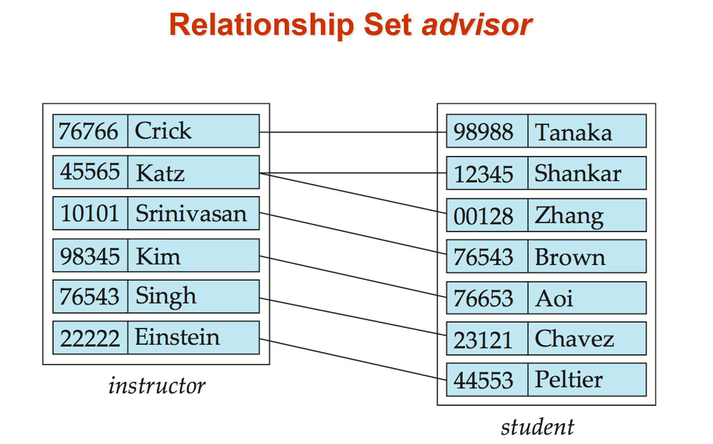
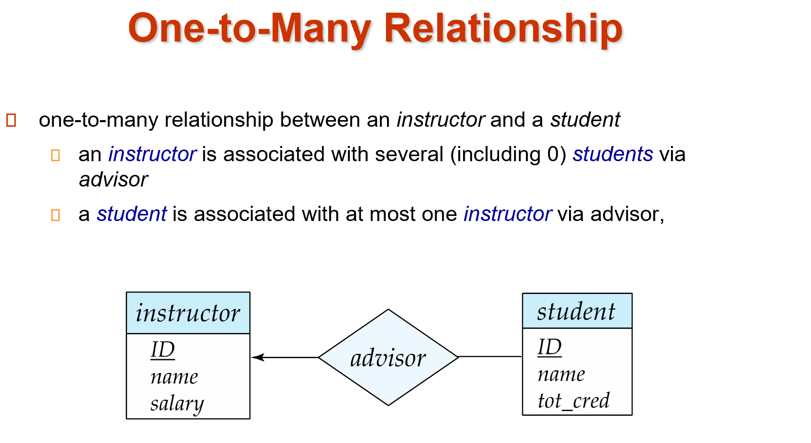
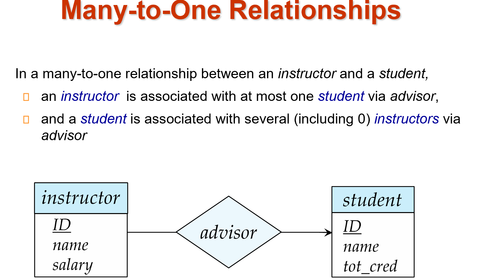
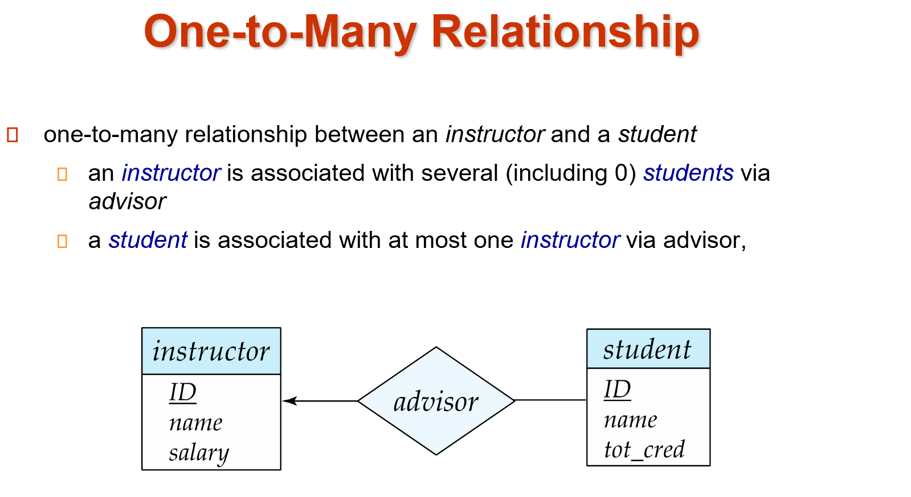
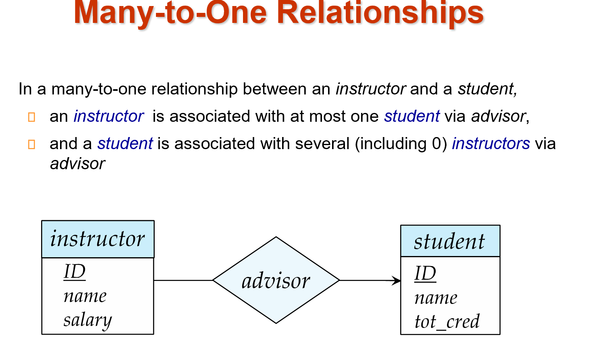
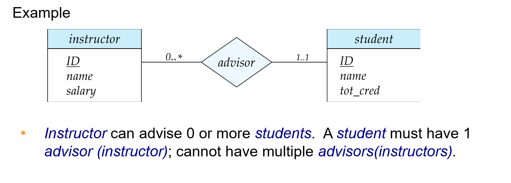
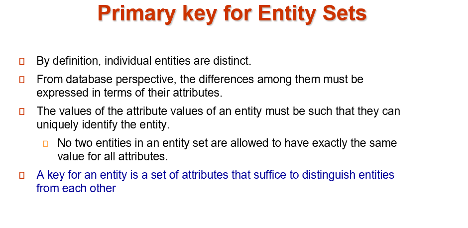
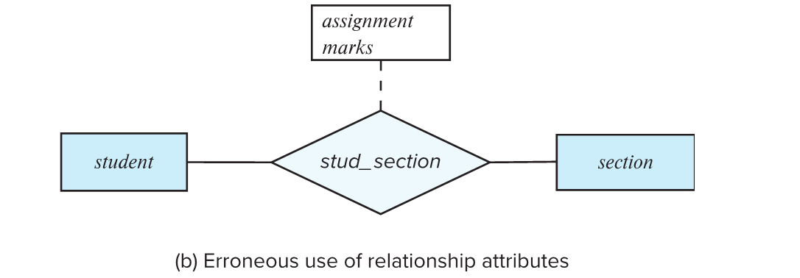
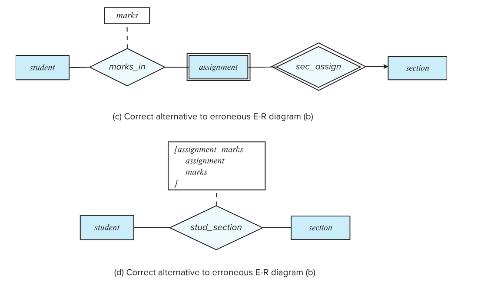
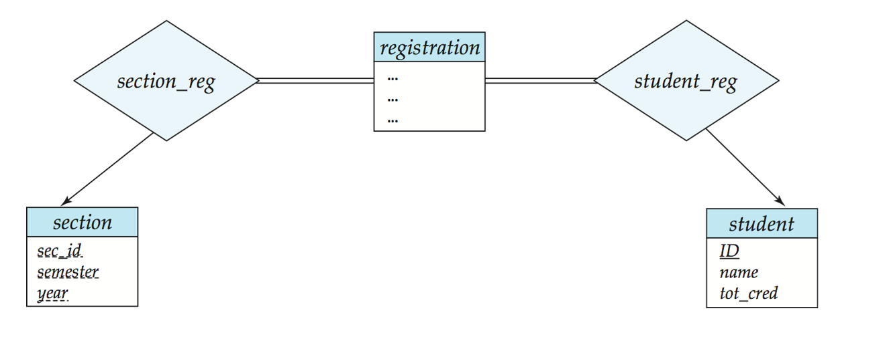

Entity-Relationship Model¶


1 Example¶
 - 一个方形框就是一个实体的集合，下面列出其属性。
- 实体与实体之间有关系，一个菱形框表示关系。
- 一对一(<->)/一对多(<-)/多对一(->)。
- 这里
- 一个方形框就是一个实体的集合，下面列出其属性。
- 实体与实体之间有关系，一个菱形框表示关系。
- 一对一(<->)/一对多(<-)/多对一(->)。
- 这里 instructor 实体里不需要 dept 属性，因为在 department 实体里有了，否则会冗余。
- 每个实体直接转换为关系模式。 关系转换为元组，元素为两个表的 primary key. 对于一对多的情况（如 instructor 和 department）转换后 primary key 仍为 ID.
- 为了减少表的数量，可以把 primary key 相同的表合并。
-
双横线与单横线不同
双横线表示每个对象都必须参与关系，而单横线则表示对象可以不参与关系。如inst_dept中如果department-inst_dep为双横线，则表示每一个系都要有老师。有些联系是隐含的，如授课老师和听课的学生。student和section之间都是单横线，因为在军训时，有课但学生还不选课即有学生不参与section -
section不足以唯一确定元组，称为弱实体，依赖于另一个实体（如 OOP、DB 都可以有同样年份学期的 1 班）。因为课程号course_id放在section会有冗余，因此没有这个属性，导致形成了一个弱实体。sec_course表示联系的是弱实体（双框），section 不能离开 course 存在。 -
relationship上也可以带属性，如 takes 上的 grade. -
关系双方可以是
相同的实体集合，course 这里的 prereq 是多对多，表示一门课可以有多门预修课，一门课也可以是多门课的预修课。 {}里面是多个值，表示复合属性。这里表示 time_slot_id 实际上可以由这三个属性复合而成。
2 Database Modeling¶
A database can be modeled as: - a collection of entities - relationship among entities.
2.1 Entities¶

Entity sets can be represented graphically as follows: - Rectangles represent entity sets. - Attributes listed inside entity rectangle. - Underline indicates primary key attributes.
Example
2.2 Relationalship Sets¶
 本质也是一个集合。最开始的例子中均为是二元联系，即是两个实体集合的关系，但是关系可以是多元的，即多个实体。如老师，同学，SRTP 项目可以共同形成一个关系。
本质也是一个集合。最开始的例子中均为是二元联系，即是两个实体集合的关系，但是关系可以是多元的，即多个实体。如老师，同学，SRTP 项目可以共同形成一个关系。
Example


2.2.1 Relationship Sets with Attributes¶
An attribute can also be property of a relationship set.
e.g. The advisor relationship set between entity sets instructor and student may have the attribute date which tracks when the student started being associated with the advisor.
Example


2.2.2 Roles¶
Entity sets of a relationship need not be distinct. Each occurrence of an entity set plays a “role” in the relationship. The labels “course_id” and “prereq_id” are called roles.
Example
2.2.3 Degree(度) of a Relationship Set¶

Example

2.3 Attributes¶
An entity is represented by a set of attributes, that is descriptive properties possessed by all members of an entity set.
Attribute types:
- Simple（简单） and composite（复合） attributes.
- Single-valued（单值） and multivalued（多值） attributes
- e.g. multivalued attribute:
phone_numbers
- e.g. multivalued attribute:
- Derived（派生） attributes
- Can be computed from other attributes
- e.g. age, given date_of_birth
Example

2.4 Mapping Cardinality Constraints¶

Example


Example
 



2.5 Total and Partial Participation¶
- Total participation (indicated by
double line): every entity in the entity set participates in at least one relationship in the relationship set 所有元素都要参与关系 - Partial participation: some entities may not participate in any relationship in the relationship set
2.6 Notation for Expressing More Complex Constraints¶
A line may have an associated minimum and maximum cardinality, shown in the form l..h, where l is the minimum and h the maximum cardinality
- A minimum value of 1 indicates total participation.
- A maximum value of 1 indicates that the entity participates in at most one relationship
- A maximum value of
*indicates no limit.
Example

2.7 Primary Key¶
Primary keys provide a way to specify how entities and relations are distinguished. We will consider: - Entity sets - Relationship sets - Weak entity sets
2.7.1 Primary Key for Entity Sets¶

翻译
- 根据定义，单个实体是不同的。
- 从数据库的角度来看，它们之间的差异必须用它们的属性来表示。
- 实体的属性值的值必须能够唯一地标识实体。
- 实体集中的两个实体不允许对所有属性具有完全相同的值。
- 实体的键是一组足以区分实体的属性
2.7.2 Primary Key for Relational Sets¶

说人话
多元联系的 primary key 是两端 key 的组合。如果是一对一的联系，那么单个实体的 key 也可以作为 primary key. 一对多的联系（如导师和学生就是一对多，那么主键应该为学生）就是在many一端的实体的键
2.7.3 Weak Entity Sets(弱实体集)¶
- An entity set that does
nothave aprimary keyis referred to as a weak entity set. - The existence of a weak entity set depends on the existence of a identifying entity set（标识性实体集）
- It must relate to the identifying entity set via a total,
one-to-many relationship setfrom the identifying to the weak entity set - Identifying relationship（标识性联系） depicted using a double diamond
- It must relate to the identifying entity set via a total,
- The discriminator(分辨符，or partial key) of a weak entity set is the set of attributes that distinguishes among all the entities of a weak entity set when the identifying entity they depend is known.
- We underline the discriminator of a weak entity set with a dashed line. （虚线）
- We put the identifying relationship of a weak entity in a double diamond. （双框）
Example
Redundant Attributes
3 Reduction to Relational Schemas¶
一个 ER 图可以转换成多种模式（图数据库、面向对象、关系模式等）
- A strong entity set reduces to a schema with the same attributes course(course_id, title, credits)
- A weak entity set becomes a table that includes a column for the primary key of the identifying strong entity set.
Primary key of the table is the union of the discriminator of the weak entity set and the primary key of the identifying strong entity set.
标识集合的主键加上弱实体集的分辨符。
- section(course_id, sec_id, semester, year)
- A many-to-many relationship set is represented as a schema with attributes for the primary keys of the two participating entity sets, and any descriptive attributes of the relationship set. 即两个集合的主键拼起来，加上关系的附带属性。
- Many-to-one and one-to-many relationship sets that are total on the many-side can be represented by adding an extra attribute to the “many” side, containing the primary key of the “one” side.
多对一可以不转换为单独的关系模式，直接在“多“那个表上添加”一“的主键即可。
Example

Example
- inst_dept 本质就是将 instructor 和 department 合并，在 instrutor 的属性上添加 dept_name. - 各有利弊，第一种写法表可能会太多，第二种写法合在一起表可能太大，不利于管理。
3.1 Composite and Multivalued Attributes¶
Composite attributes are flattened out by creating a separate attribute for each component attribute.
就像在 C 语言里定义一个结构。但是关系数据库里每个属性都必须是简单数据类型，就必须把这些复合属性铺平。
instructor(ID,
first_name, middle_initial, last_name,
street_number, street_name, apt_number,
city, state, zip_code, date_of_birth, age)
A multivalued attribute M of an entity E is represented by a separate schema EM.
Schema EM has attributes corresponding to the primary key of E and an attribute corresponding to multivalued attribute M.
就是新建立个方案关系schema
Example

Warning
4 Design issues¶
4.1 Common Mistakes in E-R Diagrams¶
- 信息冗余(student 的 dept_name 应该去掉)
- 关系属性使用不当(一门课可能有很多次作业，不能只用一个实体) 
- 解决办法： 
4.2 Use of entity sets vs. attributes¶
 - 第一种方法，明确放一个电话号码。
- 第二种方法，电话号码可以附属更多属性，一个电话号码可以由多人共享。（如办公室的公共电话）
- 第一种方法，明确放一个电话号码。
- 第二种方法，电话号码可以附属更多属性，一个电话号码可以由多人共享。（如办公室的公共电话）
4.3 Use of entity sets vs. relationship sets¶
Possible guideline is to designate a relationship set to describe an action that occurs between entities. 
说人话
实体可以便于与其他实体建立联系。 如电商，我们可以简单的把客户和商品用 buy 联系起来，但后续还会有付款、物流等情况，我们最好把 buy 实体化为订单。
4.4 Placement of relationship attributes¶
e.g., attribute date as attribute of access or as attribute of account - 第一种方法，可以记录每次访问的访问日期。 - 第二种方法，只能记录用户最近一次访问日期，不完整。
4.5 Binary Vs. Non-Binary Relationships¶
-
Binary versus n-ary relationship sets Although it is possible to replace any nonbinary (n-ary, for n>2) relationship set by a number of distinct binary relationship sets, a n-ary relationship set shows more clearly that several entities participate in a single relationship.尽管可以用若干不同的二元关系集替换任何非二元（n-ary, for n>2）关系集，但n-ary关系集更清楚地表明多个实体参与单个关系。
-
Some relationships that appear to be non-binary may be better represented using binary relationships e.g. A ternary relationship parents, relating a child to his/her father and mother, is best replaced by two binary relationships, father and mother Using two binary relationships allows partial information (e.g. , only mother being know) But there are some relationships that are naturally non-binary e.g. : proj_guide 一些看似非二进制的关系可以用二进制关系更好地表示，例如，三元关系父母，将孩子与他/她的父亲和母亲联系起来，最好用两个二进制关系，父亲和母亲代替。使用两个二进制关系允许部分信息（例如，只知道母亲），但也有一些关系自然是非二进制的，例如：proj_guide
Converting Non-Binary Relationships

5 Extended ER Features¶

未完待续